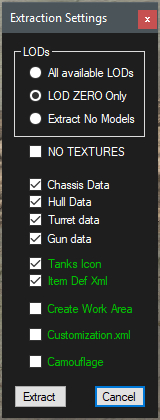

Plan Your Work.
Keeping things in order is always a good idea. Working with FBX and Texture files is no different.
TE can help with some of this work load.
A word about folders....
Decide where you will place your main work area.. The place where the FBX and Textures will be saved by TE.
When Exporter imports a FBX, if it sees \Users\ in the path of a texture, it will change it to the current logged in Windows users name.
This is so sharing files with others doesn't break texture paths.. This only works if the folders the FBX and its textures are in exactly match the original creators paths.
When passing FBX files on to others to work on.. ZIP the entire folder from the desktop. This way, TE will be able to find the textures for the FBX during import.
You can always open a zip and delete files and folders you do not want to be passed on to others.
How Tank Exporter writes information.
When you export a tank as FBX, Tank Exporter creates a sub folder under the name of the tank where you exported and places every texture it finds associates with that tank in that folder.
Tank Exporter saves these files to PNGs as most 3D apps and paint programs can load them.
When you Extract to the res_mods folder, the Extraction Settings panel pops up with settings for what you want to extract.
Here is that panel and what each check box does.
|  | The LODs group defines what models to extract. Next are the component check boxes. If you plan on only working on the Hull models and/or its textures, only check the Hull check box. Create Work Area will create a sub folder in the tanks res_mods path and place a few PNGs there for you to have easy access to for texture painting. Customization.xml extracts the customization.xml from the gui.pkg file and creates the path to it in res_mods. |
A note about LODs.. As a tank moves away from you, the detail needed becomes less. You wont notice a reduction in polygon counts that make up the model.
That process is where the LODs come from.. Each primitive set in each higher numbered LOD has less polygons than the previous LOD.
Once you have your tank component(s) edited to your liking, you will need to copy the primitive(s) from LOD to all the higher numbers LODS otherwise, the tank will revert to its original when the LOD changes to LOD1.